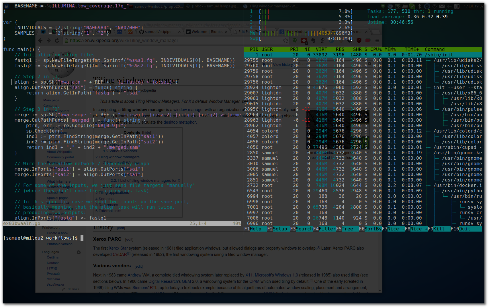
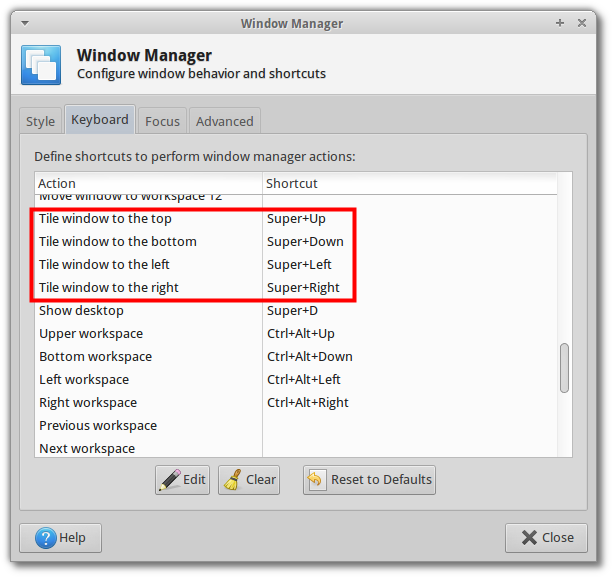

Terminator as a middle-way between floating and tiling window managers
I have tried hard to improve my linux desktop productivity by learning to do as much as possible using keyboard shortcuts, aliases for terminal commands etc etc (I even produced an online course on linux commandline productivity ).
In this spirit, I naturally tried out a so called tiling window manager (aka tiling wm). In short, a tiling wm organizes all open windows on the screen (or on the current desktop) into a “tiled” grid of frames. You can then control how these frames are created, resized, as well as switch focus between the frames, all using keyboard shortcuts. This allows you to avoid leaving the keyboard for moving windows around or resizing them, before starting your work in a new program.
I quickly realized though that tiling wms don’t seem to be by far as mature as normal so called “floating window managers”. It might be specific to ubuntu/xubuntu, but I realized that things like the wifi-manager applet is kind of dependent on the floating wm. You can find alternatives such as …, but it is not at all as much an “it just works” experience.
Thus I was very glad when I found out about terminator . Terminator basically allows you to do the same thing that tiling window managers does, but limits it to terminals. The nice thing with terminator though is that it works great together with your favourite floating window manager. I have set my terminator to start in full screen mode, and to have slight transparency, so that I can keep track of things that happen in the background, such as notifications in my web browser etc:

(I have added a few other settings too, so you might be interested in checkout out my terminator config file ).
Then, for avoiding to leave your keyboard the few times I need to use a non-commandline-program, there is also a good solution, provided you use XFCE as window manager: XFCE Allows you to set keyboards for operations such as “tile window to the left/right/upper/lower half of the screen”, “resize”, or “move window” etc.
To set this, go:
- Super + R
- Type “window manager” and press enter
- Select to the “keyboard” tab
- Scroll down to the relevant settings
- Set your favourite keyboard shortcuts!
You can see a few of my favourites in this screenshot:

Additionally, I use to set “Ctrl + Alt + R” for resizing windows, and “Ctrl + Alt + F” for moving them (“F” for “flytta” in Swedish, mainly because “F” is reachable with the left hand, but not “M” :) ).
Taken together, I find that this combination of terminator for tiling terminals, and a few selected window managing shortcuts, has caused me way less headache than the window manager I tried (i3 , which I otherwise liked a lot).